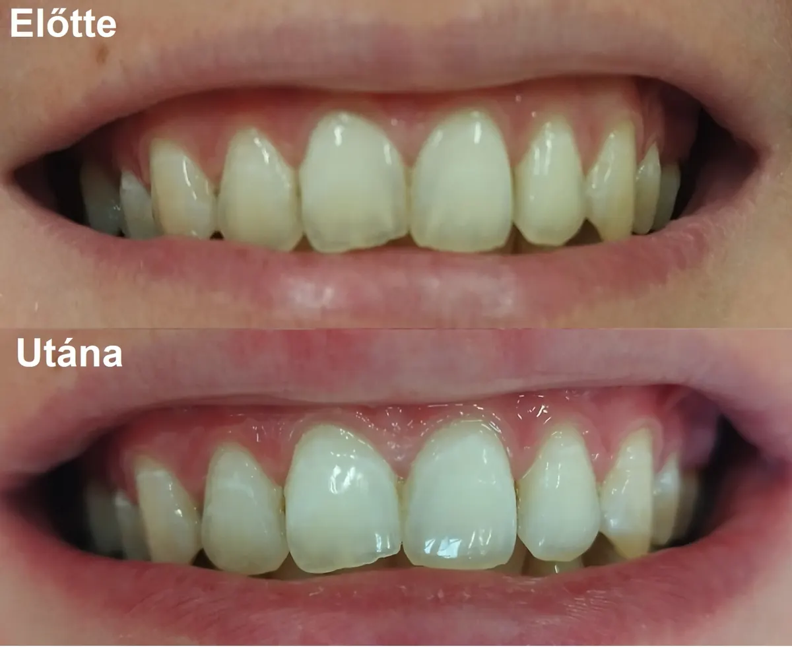
Fogfehérítés
Már 40 perc alatt is jól látható különbség: két árnyalatot sikerült világosítani, egy vidám kezelés végén.
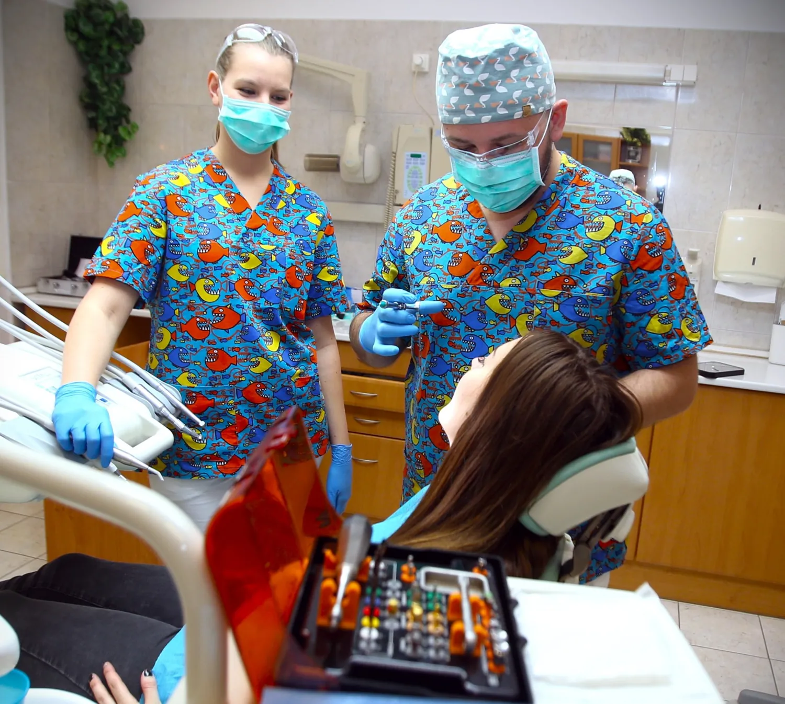
Saját rendelő az Árkád szomszédságában, szájsebész szakorvossal. Akkor is, ha eddig rettegett a fogorvostól.
Válassza ki, ami Önt aggasztja, és megmutatjuk, hogyan kezeljük nálunk. Minden válasz a rendelő saját gyakorlatából való.
Minden páciensünknél arra ügyelünk, hogy a szükséges beavatkozásokat a lehető legfájdalommentesebb módon végezzük. Nyugodt, vidám légkört teremtünk, néha egy kis humorral oldjuk a feszültséget.
Egy páciens korábban a „fájdalommentes” és a „kezelés” szót nem tudta egy lapon említeni – nálunk ez megváltozott.Google-vélemény, összefoglalvaEzt írom az időpontkéréshez
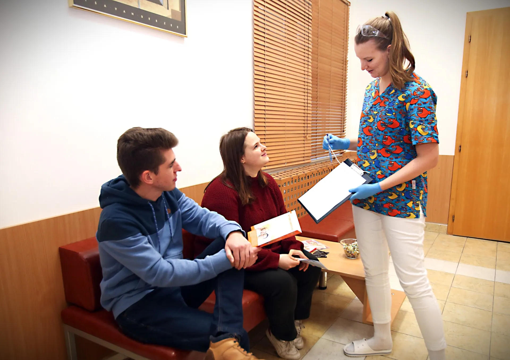
Először mindig a nyugodt, félelemmentes légkörre törekszünk, mert a fogászati fóbia leküzdésének ez fontos lépése. Ha ez nem elég, a modern gyógyszerek segítségét is biztosítjuk:
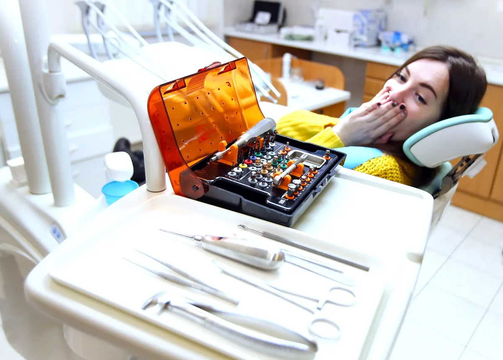
Komplex szájvizsgálatot és szűrést végzünk, utána egyénre szabott kezelési tervet készítünk több alternatívával, és árajánlatot adunk. Elmondjuk az előnyeiket és hátrányaikat, így Ön választhat.
„Nagyon kedves és alapos, mindig minden lépést türelmesen elmagyarázott.”Google-vélemény Dr. Mátyás Márkról, részletEzt írom az időpontkéréshez
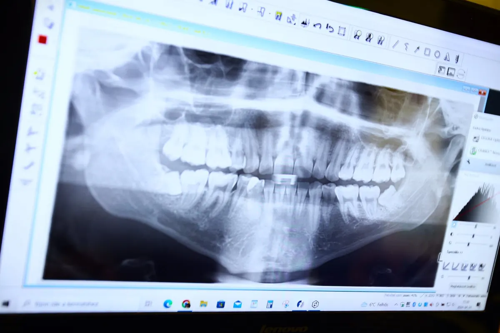
Dr. Mátyás Márk szájsebész szakorvos: 2026 szeptemberéig a PTE KK Fogászati Klinika Szájsebészeti Ambulanciáján dolgozott és oktatott. A rendelőben végzett szájsebészeti beavatkozások:
Ha nagyon tart tőle, a beavatkozás bódításban is elvégezhető.
Ezt írom az időpontkéréshez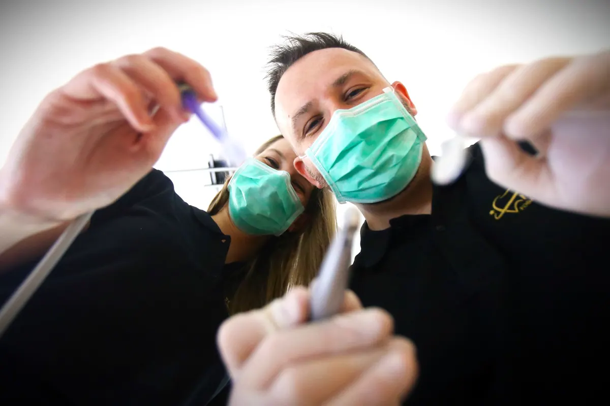
A kapacitásunk függvényében, telefonos egyeztetés után sürgősségi ellátást biztosítunk az akut panasz enyhítésére.
Hétvégén és ünnepnapokon a PTE KK Fogászati Klinika ügyelete fogadja: 8:00–16:00, 7623 Pécs, Tüzér utca 1., 72/502-422.
Hívás: +36 30 620 3911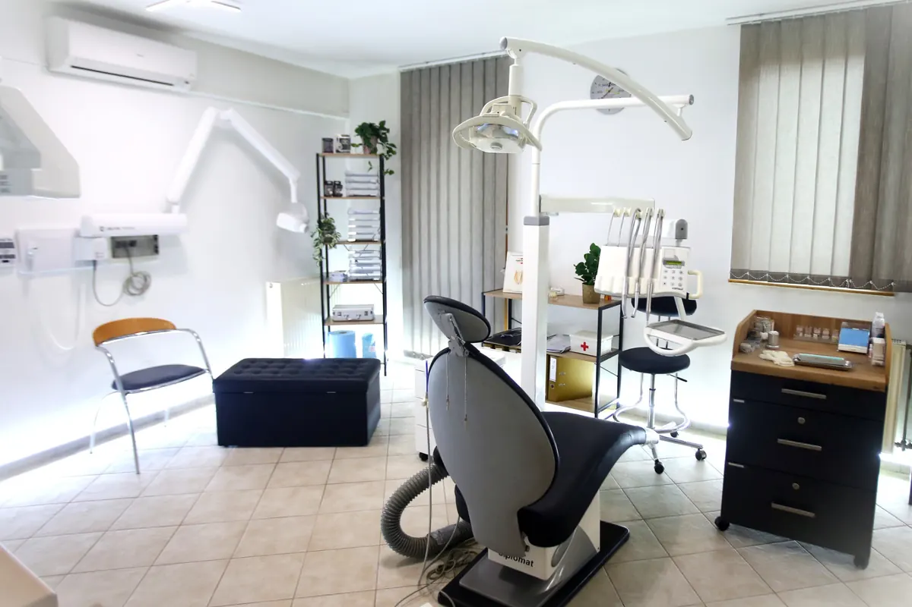
„Igyekszem a fogorvosoktól való félelem sztereotípiáját megcáfolni és a betegeimnek pozitív élményt okozni.” – Dr. Mátyás Márk
„Gyerekkori traumáimnak köszönhetően minden fogorvostól rettegek… a doktor úr a legnagyobb türelemmel és megértéssel fogadja az ájulásig fajuló félelmem. … Most, hogy saját rendelővel rendelkezik, könnyebb hozzá eljutni, nincs siettetés.”Páciens véleménye a rendelő oldaláról, rövidítveEzt írom az időpontkéréshez
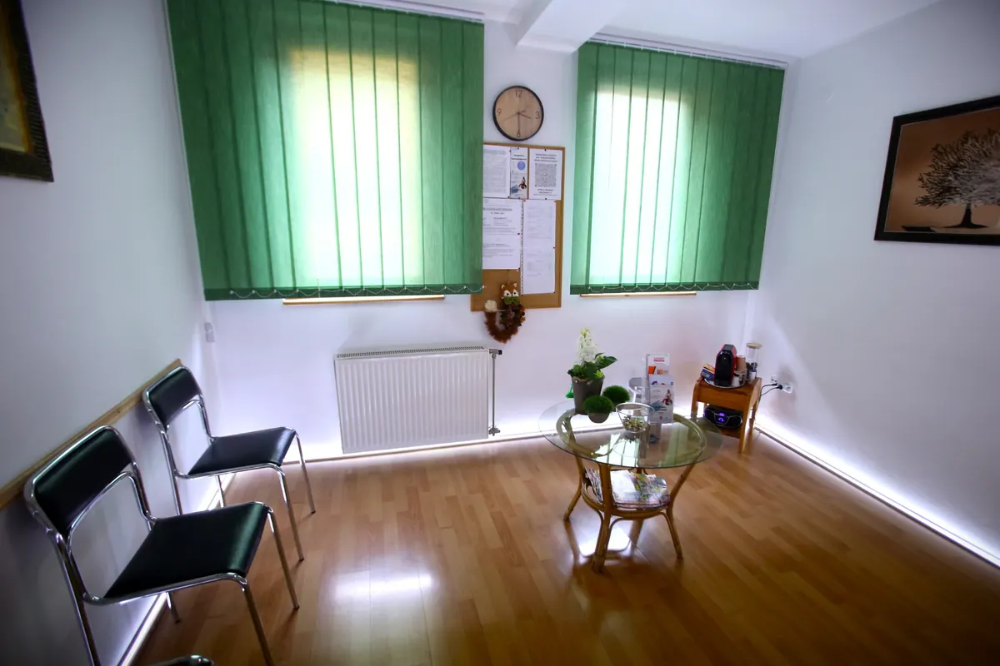
A szűrővizsgálattól az implantátumig a fogászati kezelések széles köre elérhető a rendelőben, magyarul és angolul.
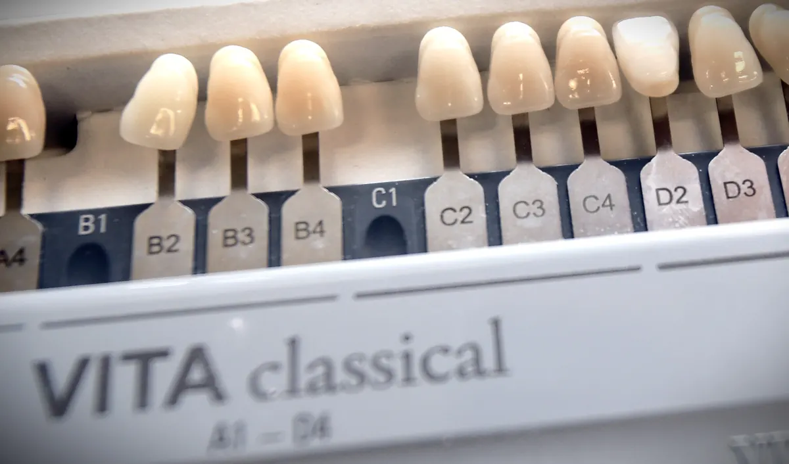
Teljes fogazati állapotfelmérés, kezelési alternatívák megbeszélése, góckutatás, várandósgondozás, szakvélemény.
Fogkőeltávolítás, foggyökér-simítás (kürett), fogágybetegség kezelése, fogfehérítés, egyéni megelőző tanácsadás az otthoni fogápoláshoz.
Fogeltávolítás, bölcsességfog, betört foggyökerek, gyökércsúcs-rezekció, csontpótlás, szájsebészeti konzultáció.
Esztétikus, fogszínű tömések, gépi gyökérkezelés, a fogak üvegszálas gyökércsapos megerősítése.
Koronák, hidak fémmentes vagy fém-kerámia anyagból; kivehető pótlások rejtett elhorgonyzással. Igény esetén a fogtechnikussal együtt választhatja ki a fogszínt és a formát.
Beültetés és implantátumon elhorgonyzott fogpótlás, két rendszer közül választva: svájci SGS prémium vagy kedvezőbb árú koreai Kuwotech.
Panoráma- és kis röntgen helyben; kérésre e-mailben elküldjük, vagy USB-re másoljuk.
Nyugodt, vidám légkör; igény esetén bódításban végzett kezelés.
Egyéni telefonos konzultációt követően, rendelési időben.
Mire hazaindul, tudja, mi a gond, milyen megoldások közül választhat, és mennyibe kerülnek.
Komplex szájvizsgálat és teljes körű állapotfelmérés, kitérve az esetleges általános betegségekre. Ha kell, röntgen helyben.
Személyre szabott javaslat a lehetséges alternatívákkal, a kezelés menetével és időtartamával, az előnyök és hátrányok ismertetésével.
Az Ön preferenciái szerint készült árajánlat. Többszöri látogatás esetén egyéni kedvezményt is biztosítunk.
Az első találkozáskor a vizsgálatot követő konzultáció díja. Fizethet készpénzzel, bankkártyával vagy egészségpénztári kártyával.
Konzultációt kérek„Férjemmel 2022-ben határoztunk úgy, hogy közös erővel megnyitjuk a Millennium Dental kapuit.” – Dr. Mátyásné Sándor Alexandra
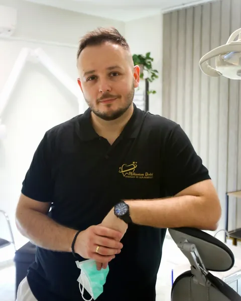
Fogorvos, szájsebész szakorvos, ügyvezető
PTE fogorvos szak, 2018. Beszélt nyelvek: magyar, angol.
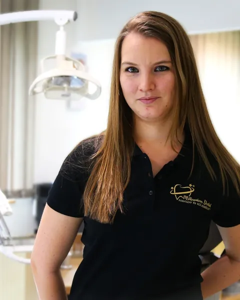
Ügyvezető, fogászati szakasszisztens
Szakápolóként a PTE KK Onkológiai Klinikán is dolgozik.
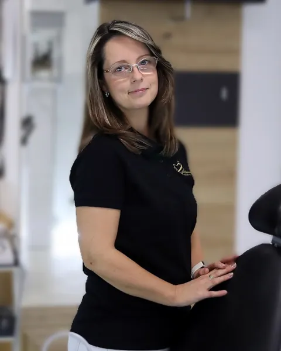
Fogászati szakasszisztens
„Hogy a páciens végig kényelemben és biztonságban érezze magát.”
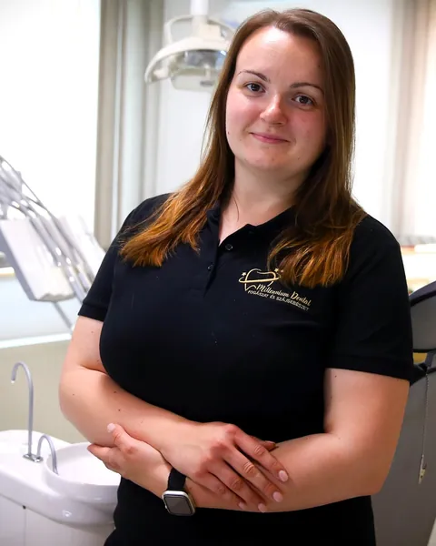
Fogászati szakasszisztens
„A mosoly nem csak az eredmény, hanem maga az út is.”
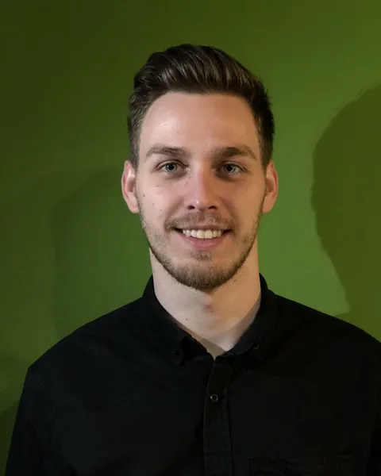
Fogtechnikus, ShapeDent labor
A funkció és az esztétika egyensúlyára ügyel.
„Munkámat a szakmai precizitás mellett a páciensközpontúság, empátia és az oldott légkör megteremtése határozza meg leginkább.”
Világos kezelő, csendes váró, helyben röntgen. Autóval a 6-os főút felől, déli irányból jobbra lekanyarodva érhető el.

Már 40 perc alatt is jól látható különbség: két árnyalatot sikerült világosítani, egy vidám kezelés végén.
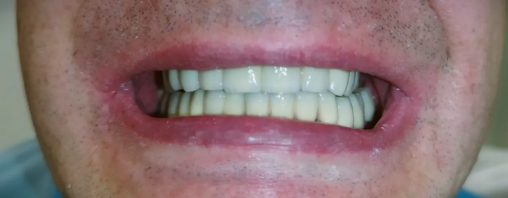
Erősen kopott fogak, süllyedt harapás és néhány reménytelen prognózisú fog: a szájsebészeti szanálás és a gyógyulási idő után következett a fogpótlás.
76 Google-vélemény alapján. Visszatérő téma: türelem, magyarázat, félős páciensek.
„Sajnos nekem sincs sok jó tapasztalatom a fogorvosokkal, de ők már az első pillanatban elhessegették minden félelmem… már tudom a gyermekeimet is nyugodt szívvel rájuk bízhatom.”
„Maximálisan elégedett voltam, nagyszerű munkát végeztek. Iszonyatosan figyelmesek, alaposak, és szakmailag felkészültek.”
Kedvesek, megértőek az asszisztensek és a doktor úr is; szakértelem, emberség, empátia – „aki nagyon fél, annak is” ajánlja.
| Konzultáció az első találkozáskorkomplex vizsgálat után, kezelési tervvel és árajánlattal | 10 000 Ft |
|---|---|
| Bódítás feláraalkalmanként | 10 000 Ft |
| Sürgősségi ellátása szükséges kezelésen felül | 10 000 Ft |
| Készenléti díjha a foglalt időpontot nem mondja le legalább 24 órával előtte | 10 000 Ft |
A kezelések árát a vizsgálat után, az Ön által választott alternatíva szerint, egyénileg adjuk meg.
Nincs. A rendelésen csak magán (térítéses) ellátásra van lehetőség, NEAK (TB) finanszírozott ellátást nem tudunk biztosítani.
Az első találkozáskor komplex szájvizsgálatot és szűrést végzünk, utána egyénre szabott kezelési tervet készítünk több alternatívával, és árajánlatot adunk. A vizsgálatot követő konzultáció díja 10 000 Ft.
Telefonon a +36 30 620 3911-es számon vagy e-mailben a fogaszat@millenniumdental.hu címen, hétköznap az aznapi rendelési idő végéig. Facebook Messengeren, WhatsAppon és Viberen nem fogadunk üzenetet.
Hétvégén és ünnepnapokon fogászati vészhelyzetben a PTE KK Fogászati Klinika ügyeleti ellátása áll rendelkezésre 08:00 és 16:00 között (7623 Pécs, Tüzér utca 1., telefon: 72/502-422).
Előzetes vizsgálat és tervezés után a páciens kísérővel, a kezelés előtt egy órával érkezik; a gyógyszert a rendelőben kapja. Félelemtől mentes, relaxált, kissé aluszékony állapotba kerül, de végig tud kommunikálni. Hazafelé gépkocsival (saját autó vagy taxi) kell kísérni. A bódítás felára alkalmanként 10 000 Ft.
Igen, a Patika, a Prémium és az Új Pillér Egészségpénztárral van szolgáltatói szerződésünk. Emellett készpénzzel és bankkártyával lehet fizetni, nagyobb összegnél előre utalással is.
A Zsinkó István utcában és a környező utcákban hétköznap 8 és 17 óra között fizetős a parkolás (II.G zóna), 17 órától díjmentes. A rendelő az Árkád keleti oldalának közvetlen szomszédságában van.
Hívjon minket hétköznap, az aznapi rendelési idő végéig:
+36 30 620 3911vagy írjon: fogaszat@millenniumdental.hu
Rendelési időn kívül is elküldheti az űrlapot: a következő rendelési napon visszahívjuk, és együtt egyeztetjük az időpontot.